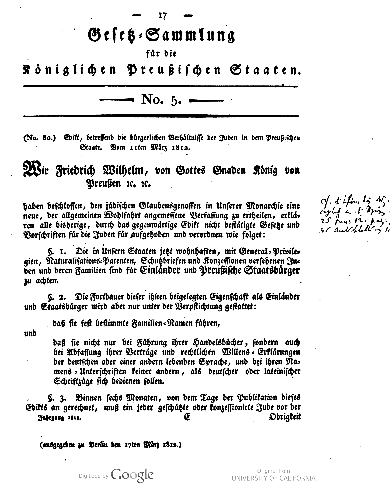

1812
צו בדבר מעמדם האזרחי של היהודים במדינת פרוסיה
Edict Concerning the Civil Status of the Jews in the Prussian State
עמוד מסמך במאגר עם פקסימיליה מקורית של העמוד הראשון בצו.

תעודת זהות
| שנה | 1812 |
|---|---|
| מדינה / ממלכה | פרוסיה |
| שליט | פרידריך וילהלם השלישי |
| תאריך | 11 במרץ 1812 |
| סוג המסמך | צו מלכותי / חוק אזרחי |
| שפת המקור | גרמנית |
| אוכלוסייה מושפעת | יהודי פרוסיה |
| רמת זכויות | הכרה אזרחית רחבה, אך ללא ביטול מלא של כל ההגבלות |
| סוג התיעוד החזותי | פקסימיליה מקורית / מהדורה היסטורית סרוקה |
תקציר
הצו הפרוסי משנת 1812 הכיר ביהודים כאזרחים והרחיב את זכויותיהם האזרחיות. עם זאת, הוא לא ביטל את כל ההגבלות, ולכן הוא נחשב שלב חשוב אך לא סיום מלא של תהליך האמנציפציה בפרוסיה.
סטטוס הפרויקט
- ✓ עמוד בסיסי נוצר
- ✓ תקציר ותעודת זהות ראשונית נוספו
- ✓ פקסימיליה מקורית מקומית נוספה
- ✓ קישור למקור הדיגיטלי נוסף
- ○ נוסח מקורי יתוסף בהמשך
- ○ תרגום עברי ואנגלי יתוסף בהמשך
- ○ מקורות ארכיוניים נוספים יתוספו בהמשך